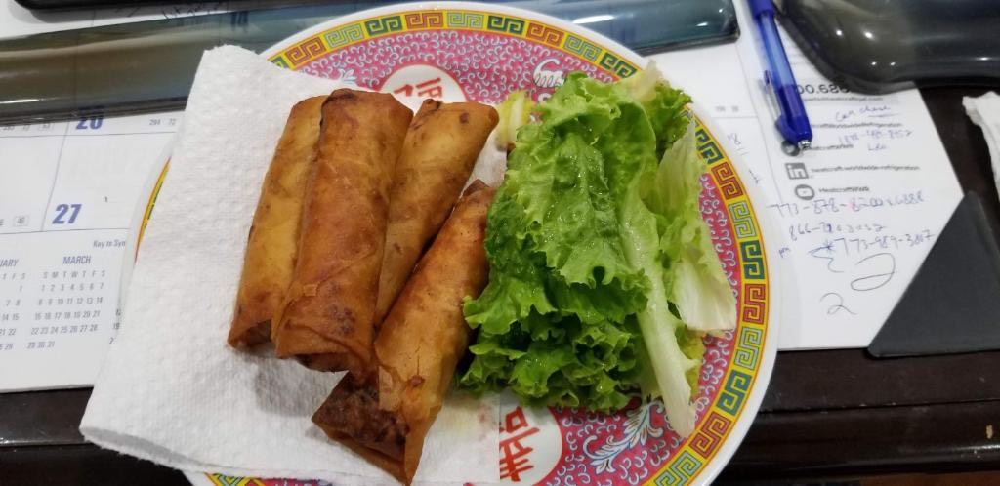

Vietnamese egg rolls, Chả Giò are a product of Vietnam being under the rule of China. Vietnam was under the rule of China for many centuries, the Vietnamese egg rolls hold similarity to the
Chinese ones. Chả Giò were origanally made for royalty which explains why they are also called "Imperial Rolls" however, they are called different names from different places (like summer rolls,
fried spring rolls, etc.). Chả Giò is what people from Southern Vietnam call it. It is an important dish of Vietnamese culture and is used in many festivities.
This recipe is my grandmas which she taught my mom which will eventually be passed down to my sisters and I.
References
Cô Ba Bình Dương. [ENG SUB] Làm CHẢ GIÒ giòn lâu vàng đẹp chỉ cần lưu ý đơn giản này | Crispy Vietnamese Spring Rolls. 2021. Youtube (https://www.youtube.com/watch?v=xXhweAEmOFs).